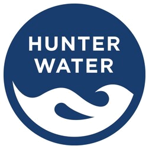
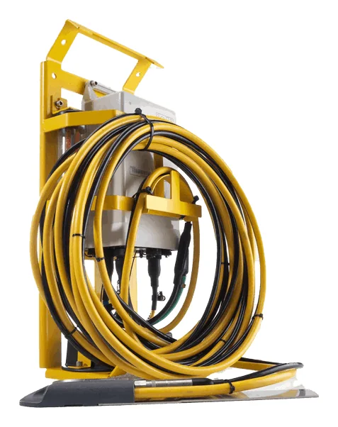
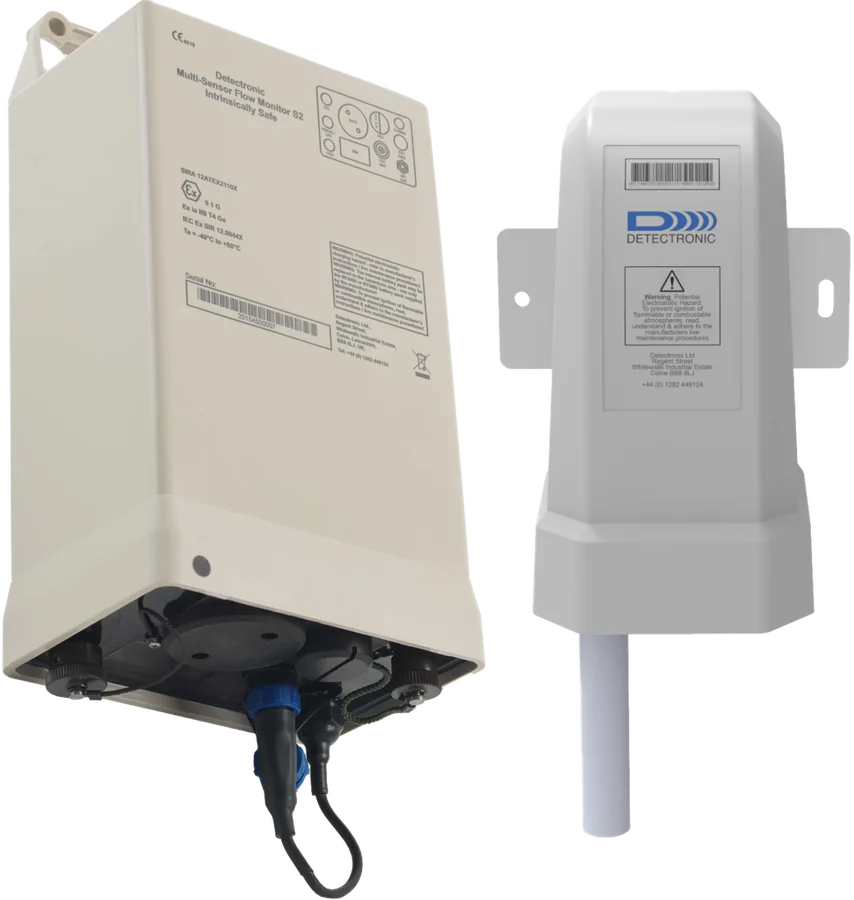
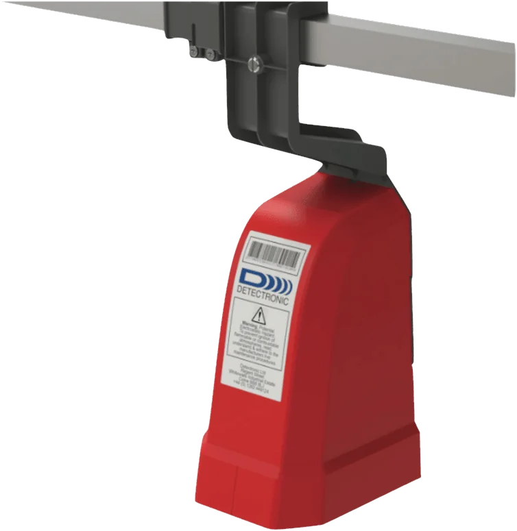
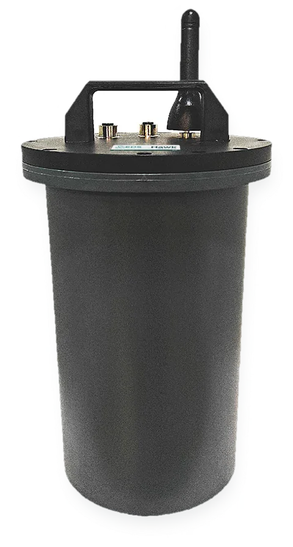
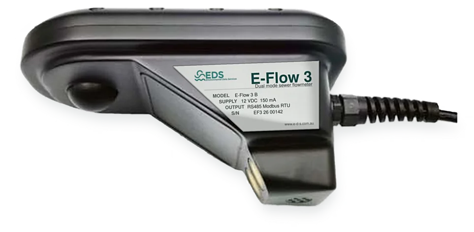
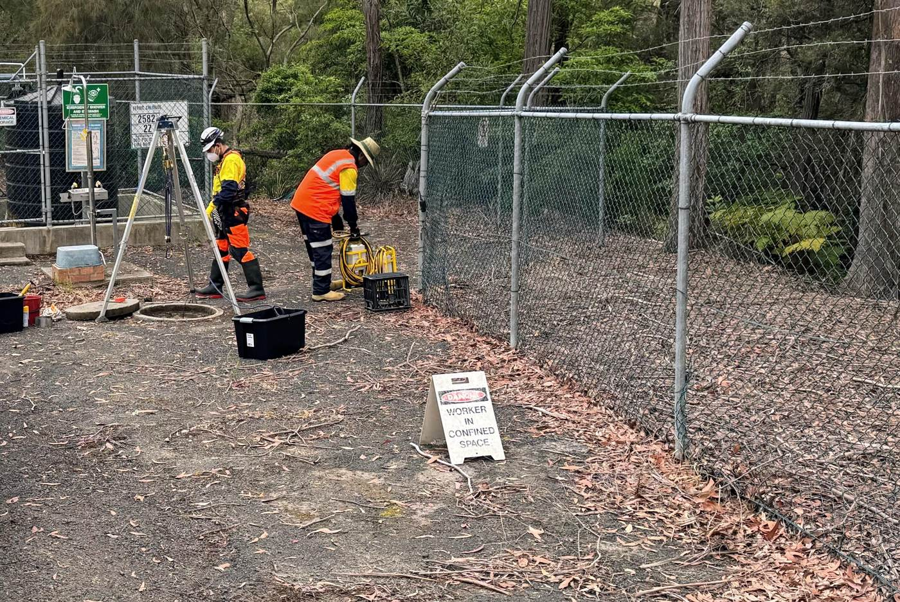

Buy
Own the instruments
Choose from one of Australia’s largest ranges of monitoring instruments, built by EDS or the manufacturers we represent.
- Supply, installation and commissioning
- On-site audits and calibration
- Training for your staff
Sewer networks
Sewer Flow MonitoringInflow & Infiltration StudiesData as a Service (DaaS)Model CalibrationThermal Infiltration SurveysBlockage & Overflow AlarmsWorks VerificationWater & environment
Water Quality MonitoringSampling & Sampler HireTrade Waste MonitoringClosed Channel FlowRainfall MonitoringReal-time data & analysis
Real-Time MonitoringPump Station MonitoringSCADA & TelemetryData Analysis & ReportingNetwork Assessment & ReviewField services & support
Auditing & CalibrationEquipment RentalFacility ManagementTraining & SupportAll servicesSolutions
Wastewater MonitoringAsset & Network AssessmentNetwork Thermal MonitoringAutomatic SamplingEnvironmental MonitoringStructure Performance & MonitoringAll solutionsAustralia’s largest supplier of water and wastewater monitoring equipment, with our own crews and data platform. Australian owned since 1991.
Trusted by government, utilities, councils and industry

Temporary and permanent flow monitoring for councils and water authorities, installed by trained crews Australia-wide.
Detectronic MSFM metersATEX and IECEx

Find where stormwater and groundwater enter the sewer, and how much, so investment goes where it counts.
Sewer flow monitoring with no capital outlay. EDS supplies, installs and looks after the equipment, and you get validated data.
No capital outlayValidated data
Flow and rainfall monitoring designed to calibrate your hydraulic model, scored storm by storm.
Flow, sampling, quality and reporting for industrial discharge, from one team, so staying compliant is simple.
Rugged 4G monitoring that reports to one map and to the SCADA you already run, with alarms that reach people.
A clear picture of how your water or wastewater network performs, where it struggles, and what to fix first.
Audits and calibration of your monitoring equipment where it’s installed, by experienced EDS technicians, so your data holds up.
Results from the field
Twenty short-term flow meters and on-site rain gauges showed three subcatchments carried 65% of the I&I. Capital went into relining and inflow reduction instead, and peak wet weather flows fell 35% within two years.
Sewer monitoring across the Wulguru and Pallarenda catchments, to inform the council’s infrastructure planning and management.
After cleaning and relining, our flow profiles showed the network back to baseline within a day, confirming full capacity was restored.
High-resolution sewer flow and rainfall monitoring, giving the utility the data it needed for infrastructure planning.
Pick a district to lift it out of the city and see the services and products EDS brings to it.
Under every street, flow and depth are measured at the manhole and sent in over 4G.
Illustrative readings, not live data.
Inflow and infiltration studies find where the rain gets in. Inflow & Infiltration Studies
Level alarms warn before a surcharge becomes a spill. Blockage & Overflow Alarms
Thermal surveys locate the infiltration that keeps flowing after the rain. Thermal Infiltration Surveys
Wet well levels, pump runs and alarms, watched around the clock.
Illustrative readings, not live data.
Pump station monitoring shows whether start and stop levels suit the flows arriving. Pump Station Monitoring
Flow, quality and sampling through every stage of treatment.
Illustrative readings, not live data.
Closed channel flow metered without cutting the pipe. Closed Channel Flow
Discharge measured and sampled, so trade waste stays compliant.
Illustrative readings, not live data.
Water quality, rainfall and temperature, from baseline to compliance.
Illustrative readings, not live data.
Rain data shows why the network changed. Rainfall Monitoring
Water quality monitoring, from baseline to compliance. Water Quality Monitoring
Buildings and structures scored 24/7 and managed as one service.
Illustrative readings, not live data.
Every reading arrives in one place: EDS FlowSense.
Illustrative readings, not live data.
Every alarm lands in one place. EDS FlowSense
Scored storms calibrate the sewer model. Model Calibration
City tour
Seven districts and one platform: every reading you saw arrives in EDS FlowSense.
or keep scrolling
However you fund your program, you get the same instruments, our own crews from four offices and FlowSense. Pick the way that suits your budget and timeline.
Own the instruments
Choose from one of Australia’s largest ranges of monitoring instruments, built by EDS or the manufacturers we represent.
For a study or a season
Short- and long-term hire from the EDS fleet, installed by you or by trained EDS crews.
No capital outlay
EDS selects the sites, installs and maintains the equipment and validates the data continuously. You pay for data you can rely on, with nothing to own.
EDS FlowSense, built and supported in Australia: live operations, infiltration and inflow, pump stations and calibrated models, for every site we measure.
I/I heat mapSeverity by pipe
Blockage WatchDry nights only
Pump Station ManagerWet well, to scale
AlarmsSent to people, not addresses
We design and build our own loggers and flow meters, and represent Detectronic, Hach, ORI, Beadedstream and others. We install, service and calibrate every instrument here ourselves.

DetectronicMSFM S2 with LIDoTTThe area velocity meter our sewer fleet runs on, with the level sensor that keeps measuring as the chamber surcharges.ATEX and IECEx Zone 0LIDoTT level to ± 2 mm
DetectronicLIDoTT AlarmRadar level sensor, battery, modem and antenna in one device, for early warning of blockages and overflows.Radar level to ± 5 mmUp to seven years on battery
EDSHawkThe 4G logger built for Australian sewer networks. It lives inside the manhole, with no cabinet to build and no power to bring to site.IP68 submersibleDesigned and built by EDS
EDSE-Flow 3Contactless radar measures velocity and depth in normal flow. When the sewer surcharges, ultrasonic and pressure sensors take over.Four sensors, no gap in the recordDesigned and built by EDSGraham and Cynthia Harper established EDS in Queensland, with the release of its flagship product, the Pump Station Manager (PSM).
EDS began servicing and monitoring the Australian Defence facility, under a contract still in place.
EDS was awarded a five-year panel contract to supply sewer flow and level instruments to Sydney Water.
EDS was awarded a service provider contract with Transurban to service and maintain key tunnel infrastructure.
EDS is now Australia’s largest supplier of equipment for the water and wastewater industry. It was also awarded the largest sewer monitoring project in Australia in recent years.

EDS helped us design and implement a user friendly and rugged sewer monitoring program that was completely remote. The level of service and professionalism received by EDS is always leading the industry.Tony Cockrel, DERM
Crews and support across the country. Call 1300 721 683 from anywhere in Australia.
Government, utilities and industry have relied on EDS for operational monitoring for more than thirty years.
Tell us about your network, site or project. A real person from our team will come back to you.